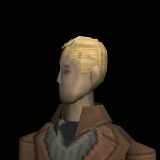
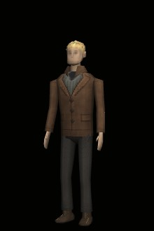

O FORASTEIRO
Protagonista, sem nome. Chegou de fora e ficou para caçar o chupacabras.
- Idade
- 33 anos
- Altura
- 1,75 m
- Porte
- médio
- Rosto
- Loiro, cabelo penteado para trás, olhos fundos, sobrancelhas retas e barba rala.
- Corpo
- Estatura média e ombros largos.
- Roupa
- Jaqueta de couro marrom com lapelas, suéter cinza de gola V, camisa escura, calça escura e botas.
- Jeito
- Sério e calado. Não é da cidade, e todo mundo percebe.